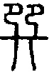
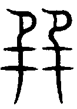
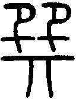
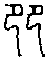
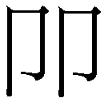
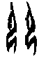
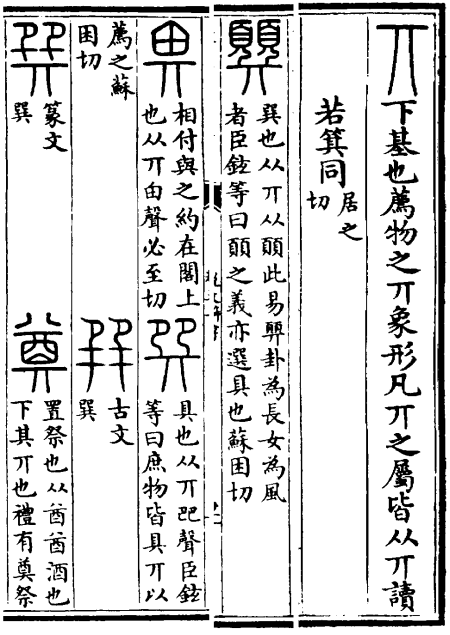
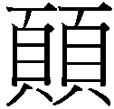

䷸ 巽卦 巽為風
巽，小亨，利有攸往，利見大人。初六，進退，利武人之貞。九二，巽在床下，用史巫紛若，吉无咎。九三，頻巽，吝。六四，悔亡，田獲三品。九五，貞吉，悔亡，无不利。无初有終，先庚三日，後庚三日，吉。上九，巽在床下，喪其資斧，貞凶。
|
象曰：隨風巽，君子以申命行事。（圖：小配） |
【卦名】
今本：巽 歸藏：巽 帛書：筭 清華簡：巽 海昏簡：屯巽 說文：顨
《說文》丌部：「，具也，从丌𠨎聲。 ，古文巽。，篆文巽。」徐鉉：「庶物皆具丌以薦之。」段玉裁：「巺今作巽。」丌音几，為「下基，薦物之丌」，因此「具」指的是祭祀之器具。
「具」的解釋與現今易學上對巽的註解不同，因此段玉裁說：「孔子說《易》曰：巽，入也。巽乃愻之假借字。愻，順也。順故善入。許云具也者，巽之本義也。」
段玉裁之說，是因為未求得巽的字源，無法解釋《說卦傳》所說的巽為入，只好從假借字去尋找答案。《說文》卷九卩部另有一（、𠨖）字，從雙卩，差別在於少了下方的几字（丌）：「，二卩也，巽从此。」二卩即，此亦巽之本字，甲骨文作，為二人跪伏的形態，表示順從、服從的意思，也是巽卦的卦義及取象。竊疑，下所加的丌，即巽卦爻辭「巽在牀下」的「牀」。
李鏡池、高亨等學者也認為，巽的本字為，本義為「伏」。
李鏡池：「許慎知巽的字源，而不知其義。實則即巽本字，甲文有字，象二人同跪。《殷虛文字類編》認為，即《說文》之𠨖，謂疑即古文巽字也。人跪即順服義，巽訓伏、服。伏、服，音義同。」
高亨《周易古經今注》對此亦有詳論，他認為，巽古字最早只有上面象兩人跪伏的，後來又在下面加一橫，以象跪坐的「藉」（墊子），後來經過層層訛變之後就成為巽字。高亨並將巽解釋為伏：「象二人跽伏之形，其本義當為伏也。」「《雜卦傳》訓伏，甚契初恉。本卦巽字，皆伏義也。」
不過《說文》是以「顨」為《周易》卦名：「顨，巽也。从丌从。此《易》顨卦，為長女，為風者。」段注：「，選具也。按：選具者，選而供置之也。」
選與算古音同，亦通假，帛書巽卦即作筭，筭通算。《說文》：「筭，長六寸，計歷數者。从竹从弄，言常弄乃不誤也。」《說文》說的「巽，具也」，或段注說的「選具」或即指「筭」，算具的意思。筭是古代計算曆數的竹板，或稱筭籌。九二爻辭說「筭在床下，用史巫紛若」，那麼筭有可能是史巫筮算之具。當代學者如鄧球柏，李零，即將巽解釋為算具、籌策，若作動辭則是指籌算、筮算，如「頻巽」即頻繁地筮算，或緊急地筮算。帛書作「編筭」，為編排籌策。
海昏簡《易占》：「䷸，屯巽，屯巽者孫也。」「屯巽者孫也」李零釋讀認為「屯」為衍文，當作「巽者孫也」。總觀《易占》簡文其他純卦體例，重卦卦名與八卦卦名相同時，就用「〃」重文符號表達，如「䷹屯說〃者說也」（䷹，純兌，兌者說也），「說」即䷹卦名，今作兌。但震卦作「屯晨侲者恐懼也」（純震，震者恐懼也），「屯晨」（純震）為二體卦象描述，「晨」為八卦卦名，「侲」為上下皆晨的純卦卦名。比較其表達體例可知，巽卦卦名當作「純巽」，並非李零認為的屯為衍文，將卦名定為巽並不正確。如果六十四卦的巽卦卦名為巽，簡文當作「屯巽〃者孫也」。
孫則假借為愻，通遜，順也。此與《說卦》「坤為順」似乎有重覆，坤既為順，巽當作別義。段玉裁「愻，順也。順故善入」則取其引申義為入，配合《說卦》說的「巽為入」。
【卦義】
申命，順服、伏、漸進，進入，籌算。
巽在易傳中解釋為伏，引申為順服，服從。《雜卦傳》說「兌見而巽伏也」，這也說出了巽字最早的造字本義。
《說卦傳》另有「坎為隱伏」，巽與坎之取象似有重覆。其實，這在易象不算少見。例如坤為順，巽亦有順義。而乾為光，離也取象光明。坤為輿為車，象數派則多有將震取象為車者，也有以離為輿的。《說卦》說「震為龍」，但乾卦六爻取龍象。蓋因八卦之取象原本就是基於一種符號的聯想與想像，不是數理邏輯之精確推演。再者，巽之為伏與坎之隱伏意義也不相同。巽之伏，較偏向謙遜、低調、幽隱的意思。坎之隱伏，帶有偷盜之義（坎為盜）。
《象傳》說「巽，君子以申命行事」、《繫辭傳》「巽以行權」似乎又從另一角度說出巽的字義。巽一方面是服從、聽命，另一方面也是大人對下人之申命，交待事情、下達命令、行使權力。這種雙面性意義在中文中相當常見，例如觀卦的觀，段玉裁說：「我諦視物曰觀，使人得以諦視我亦曰觀。」因此朱熹將觀分別就卦與爻取「觀示」和「觀瞻」兩義。巽也有類似的取義：下達命令是巽，聽從命令也是巽。這是因為不同的人從不同的位置，理解同樣的圖畫就會產生相對立的不同意義。
至於《序卦傳》及《說卦傳》以巽為「入」，或許是「伏」的引申義，可能取其潛伏而入，潛入之意。《乾坤鑿度》則以為「入」字取自風無所不入的特性：「巽，古風字，今巽卦。風散萬物，天地氣脉不通，由風行之，逐形入也，風無所不入。」「乾坤成氣，風行天地，運動由風氣成也。上陽下陰，順體入也。能入萬物，成萬物，扶天地，生散萬物。」
《說卦傳》：「帝出乎震，齊乎巽。」「齊乎巽，巽，東南也。齊也者，言萬物之絜齊也。」「齊」即平等、整齊的意思。《莊子．齊物論》：「大塊噫氣，其名為風是唯无作，作則萬竅怒呺。」由此看來，自古似乎將風視為萬物平等的一個象徵，因此「齊物倫」中以風為喻。
帛書卦名作筭，爻辭兩言「筭在牀下」，上九又有「喪其資斧」之言，資斧為軍權之象徵。因此推論，此或為古代廟筭之事。古代遇戰事，則告於太廟，筭於廟堂，《孫子》：「夫未戰而廟筭勝者，得筭多也；未戰而廟筭不勝者，得筭少也。」杜牧注：「廟筭者，計筭於廟堂之上也。」
巽是八純卦之一，其上下都是由三畫卦的巽所構成。巽在三畫卦中代表風、木、命令。於人倫為長女，因為巽是一索而得女。巽卦的意思又有「浸入」，逐漸滲透、進入的意思，也有流行、風潮的意思。由於卦象為一陰順承二陽，因此取其順遜之義。
卦象上下內外都是巽，所以本質上是非常柔順的一卦。上下都是風，有如風吹一樣，無孔不入，就像風潮的流行，亦如君王命令的施行，無所不至。又有反覆申命，叮嚀的意思。
卦序上巽是繼旅卦而來，《序卦》曰：「旅而无所容，故受之以巽。巽者，入也。」旅卦為客居他鄉，流離失所，一人孤立無援，凡事柔順而浸入則可亨通，所以旅之後受之以巽。
得巽卦小事可逐漸亨通，但不宜做大事。利於見大人。執行任何事情時應記得反覆丁寧，不厭其煩。若問流行文化，則巽卦大吉。若問胎生，必生女孩。財運、生意則近市利三倍，大吉。問來人，則隱伏而不見。
巽，小亨，利有攸往，利見大人。
《彖》曰：重巽以申命，剛巽乎中正而志行，柔皆順乎剛，是以小亨，利有攸往，利見大人。
《象》曰：隨風，巽，君子以申命行事。
巽，小亨通，利有所往，利於見大人。
陸績：「巽為命令。重命令者，欲丁寧也。」得巽卦凡事應該反覆丁寧為宜。
【字義】
小亨：於小事可亨通，大事則不可。《易經》的亨和利偶有加「小」者，如巽與旅卦皆言小亨。賁卦「亨，小利有攸往」，遯卦「亨，小利貞」。陽為大，陰為小，以陰爻為主爻者則稱小。巽卦主爻應是初六與六四，因此《彖傳》說「柔皆順乎剛，是以小亨」。
隨風：隨為前後相隨，隨風，風前後相隨而至。孔穎達：「兩風相隨，故曰隨風。」程朱：「隨，相繼之義。」
申命：巽為命令，重巽為申命之象。《說文》：「申，神也。七月，陰气成，體自申束。从𦥑，自持也。吏臣餔時聽事，申旦政也。」神為引出萬物者，因此申似為引申之義。易學家則以巽為重巽之象，因此將申解釋為重，重複，引申為反覆不斷。八純卦上下卦皆同，傳達的都是連續不斷的意象，而不是雙重而已。如乾卦說「天行」，君子法天體運行不息而至健，故曰「君子以自強不息」。虞翻：「巽為命，重象，故申命。」荀爽：「巽為號令，兩巽相隨，故申命也。」程頤：「重巽者，上下皆巽也。」「申，重復也，丁寧之謂也。」政令之宣傳，並不是公告即可，而是要不停地宣傳到有如風行一樣地無孔不入。例如喝酒不開車，吸毒戕身等等的政令，並非一次告戒兩次告戒，而是長年無孔不入地不斷宣導。丘富國：「申命者，所以致其戒於行事之先。行事者，所以踐其言於申命之後。」
初六，進退，利武人之貞。
《象》曰：進退，志疑也；利武人之貞，志治也。
進退不果，宜於武人的堅定。
意志不堅，心生懷疑，不夠果斷。反之對於武人等意志較剛強的人而言則非常有利，因為這類型的人做事不會有猶疑不定的弊病。
巽為進退不果，意志不堅定，對事情猶疑。陽剛不足，陰柔有餘。而具有陽剛之氣的人，特別是武夫、軍人，秉性剛毅而果決，沒有進退猶疑的缺失。因此為吉。貞，堅定的意思。
觀六三「觀我生進退」。履卦六三「武人為于大君」。
俞琰：巽，申命行事之卦也。令出則務在必行，豈宜或進或退。初六卑巽而不中，柔懦而不武，故或進或退而不能自決也。若以武人處之，則貞固足以幹事矣，故曰利武人之貞。
【字義】
進退：有二義：1. 《說卦》：「巽為進退，為不果。」進退即或進或退，內心猶豫不決，遲疑不定，《象傳》所說的「志疑」，志意懷疑。初為下巽之主爻，陰柔而最處卑下，因此在申命行事上有進退而不果之象。 2. 義同觀六三「觀我生進退」的「進退」，指的是進退之間、進退之道。全爻意思為，在進與退之間的選擇上，利於像武人一樣堅定的態度。
志治：對比於進退的志疑，若能用「武人之貞」則志可得治，理而不亂。趙汝楳：「治與疑對，志疑而不決，故進退靡定。志治而不亂，故決於行。」或以志治為志在得治，如孔穎達：「志在使人從治。」兩說以趙汝楳為長。
九二，巽在床下，用史巫紛若，吉，无咎。
《象》曰：紛若之吉，得中也。
拜伏於牀下，有如史巫一樣的祭禱，吉則可以免除罪咎。
謙卑而誠心的禱告，將得保祐而吉。
史巫，通鬼神者，類似今之靈媒、法師。紛若，繽紛、紛紛，形容史巫祭禱手足舞蹈的樣子。荀爽則認為，「用史巫紛若」是將軍征伐勝利之後，以史官書寫功勳，請巫祭祀告訴於宗廟。
帛書作「筭在牀下」，為籌算於牀下，史巫為通於鬼神而專於卜筮者。古代筮法要揲蓍演卦，筭即揲蓍演卦。
【字義】
巽在床下：拜伏在牀下，比喻謙遜、謙卑。如王弼：「處巽之中，既在下位，而復以陽居陰，卑巽之甚。」程頤則以九二過於謙卑而有不安之義：「二居巽時，以陽處陰而在下，過於巽者也。牀，人之所安。巽在牀下，是過於巽，過所安矣。」朱熹：「當巽之時，不厭其卑。」荀爽則認為，床下是近在眼前的意思，喻指將軍只專注於軍帳中的事情，不及出帳，在床下就下達命令：「牀下，以喻近也。二者，軍帥。三者，號令。故言牀下。以明將之所專，不過軍中事也。」帛書作「筭在牀下」，為在牀下籌算。
史巫：《說文》:「史，記事者也。」「巫，祝也。女能事無形，以舞降神者也。」「祝，祭主贊詞者。从示从人口。一曰从兌省。《易》曰：兌為口為巫。」史即記言記事者，段玉裁引〈玉藻〉：「動則左史書之，言則右史書之。不云記言者，以記事包之也。」巫即巫祝、巫師，《說文》只說是「女」，實則包含覡，段玉裁：「按：祝乃覡之誤。巫、覡皆巫也。」史巫在古代亦負責祝禱與卜筮之事，帛書《要》孔子談到他的讀易與史巫之卜筮的不同：「易，我後其祝卜矣！我觀其德義耳也。幽贊而達乎微，明數而達乎德，又仁守者而義行之耳。贊而不達於數，則其為之巫。數而不達於德，則其為之史。史巫之筮，鄉之來也，始之而非也。後世之士疑丘者，或以易乎？吾求其德而已，吾與史巫同涂而殊歸者也。君子德行焉求福，故祭祀而寡也；仁義焉求吉，故卜筮而希也，祝巫卜筮其後乎？」古代卜筮多由太卜或史官占決，如《左傳》成公十六年「（晉）公筮之，史曰：吉。其卦遇復」，莊公二十二年「周史有以《周易》見陳侯者，陳侯使筮之，遇觀之否」，僖公十五年「晉獻公嫁穆姬，史蘇占之曰：不吉」，哀公九年「晉趙鞅卜救鄭，遇水適火，占諸史趙、史墨、史龜」。馮椅：「周官史掌卜筮，巫掌祓禳。卜筮所以占其吉凶，祓禳所以除其烖害。」荀爽：「史以書勳，巫以告廟。」
紛若：眾多或紛亂貌，各家演繹不同。孔穎達：「紛若者，盛多之貌。」《釋文》：「《廣雅》云：眾也，喜也，一云盛也。」程頤演繹為誠意很多：「紛若，多也。苟至誠安於謙巽，能使通其誠意者多，則吉而无咎。」李光地則認為是申命之繁瑣：「紛若者，以喻申命之頻煩，而行事之織悉也。」來知德解釋為繽紛雜亂：「紛者繽紛雜亂貌，若語助辭。」荀爽又別為一意，與諸家不同：「紛，變。若，順也。謂二以陽應陽，君所不臣，軍師之象。」
九三，頻巽，吝。
《象》曰：頻巽之吝，志窮也。
憂愁的跪伏，吝。志短而心生憂戚，有志難伸。
頻，同顰，皺眉、憂愁的樣子。巽為伏。
或：急切地籌筭，有吝。頻為急，巽為筭。
【字義】
頻巽：顰蹙而巽，如復卦頻復例。王弼：「頻，頻蹙。」虞翻：「頻，頞也。謂二已變。三體坎艮，坎為憂，艮為鼻，故頻巽。」頞原為鼻樑，引申亦為顰蹙之義，如《孟子．梁惠王下》：「舉疾首蹙頞而相告。」蘇軾：「故頻蹙以待之。」至程頤之後將頻解釋為頻繁、婁次，頻巽為屢失婁巽，失其義矣。程頤：「非能巽者，勉而為之，故屢失也。」「頻失而頻巽，是可吝也。」頻亦有急義，《詩．桑柔》「國步斯頻」，毛亨：「頻，急也。」頻巽或為頻筭，頻筭者，急筭也。
六四，悔亡，田獲三品。
《象》曰：田獲三品，有功也。
不再後悔，打獵捕獲的獵物很多，足以做為三種品類的用途。
打獵捕獲三品的獵物，收穫非常豐盛。下足以宴請賓客，上足以奉獻君上、敬鬼神。田，畋獵，打獵。品，品類。三品，三種品類的用途。品類並不是指獵物之種類，而是指用途。王弼：「田獲三品。一曰乾豆，二曰賓客，三曰充君之庖。」
沈該：「田獲三品，令行之效也。田，除害也。獲，得禽也。行君之令而致之民，將以興利除害也。害去利獲，令行而功著，是以田獲三品也。」田比喻為除害，獲比喻為興利，三品為興利功著。
解卦九二「田獲三狐」。
【字義】
田獲三品：打獵捕獲三品的獵物，收穫非常豐盛。三品，有二說：一是指三種品類的用途。王弼：「田獲三品。一曰乾豆，二曰賓客，三曰充君之庖。」此出於《禮記》的「三田」之說：「天子諸侯無事，則歲三田，一為乾豆，二為賓客，三為充君之庖。」鄭玄注：「乾豆，謂腊之以為祭祀豆實也。庖，今之廚也。」也就是分別用來製作腊肉、宴請賓客，給君王加菜等三種用途。二是以三品為三類的獵物，如虞翻：「謂艮為狼，坎為豕。艮二之初，離為雉。故獲三品矣。」翟玄：「田獲三品，下三爻也，謂初巽為雞，二兌為羊，三離為雉也。」
九五，貞吉悔亡，无不利。无初有終，先庚三日，後庚三日，吉。
《象》曰：九五之吉，位正中也。
貞定則吉而不再後悔，無不利。沒有開始，卻有結果。庚日之前三天（丁日，丁寧的意思），庚日之後三天（癸日，揆度的意思），都是吉日。
或言命令的變更施行，一定要審慎，前三天要就要開始準備與試行，施行之後三天還要持續追蹤與了解其施行的狀況。
「先庚三日，後庚三日」與蠱卦「先甲三日，後甲三日」意思近似。也都有兩種意思。一是指「吉日」，二是指做事要有規畫和深思遠慮。古時以十天干「甲乙丙丁戊己庚辛壬癸」計日，那麼先庚三日、後庚三日分別為丁日和癸日。這兩日為做事的日子，所以講的是吉日。其次，先甲後甲和先庚後庚都是指命令的施行，非常有規畫，有謀慮，而不是隨意亂為。差別在於「甲」為命令的創制、首創，「庚」為命令的變更。之所以取庚之前後三日，是因為丁日有叮嚀的意思，而癸有揆度評量的意思。
【字義】
无初有終：沒有開始，而有善終而不亂。開始的時候事情非常糟糕，但還是能夠有結果。終，結果。謙卦「君子有終」。
先庚三日，後庚三日：原指做事情的吉日，先庚三日為丁日，後庚三日為癸日。古代以天干計日，故蠱言「先甲三日，後甲三日」，豐卦初九「雖旬无咎」，旬即十日，即一天干。後世多以隱喻來解讀，如王弼認為庚與甲都是「申命」：「申命令謂之庚。夫以正齊物，不可卒也；民迷固久，直不可肆也，故先申三日，令著之後，復申三日，然後誅而无咎怨矣。甲、庚，皆申命之謂也。」至程頤之後，以庚為更，意指事情之變更。《程傳》：「甲者事之端也，庚者變更之始也。十干，戊己為中，過中則變，故謂之庚。」朱熹：「庚，更也，事之變也。先庚三日，丁也。後庚三日，癸也。丁，所以丁寧於其變之前。癸，所以揆度於其變之後。」
上九，巽在床下，喪其資斧，貞凶。
《象》曰：巽在床下，上窮也；喪其資斧，正乎凶也。
拜伏於牀下，喪失了財產與斧頭，堅定為凶。
資斧象徵的是權力、權位，決斷的工具。喪失決斷工具，則不足以申命行權。
旅卦九四：「旅于處，得其資斧，我心不快。」
【字義】
資斧：資斧有多種說法。1 .王弼以資斧為決斷之具：「斧能斬決，以喻威斷也，巽過則不能行威命。命之不行，是喪其所用之斧。」但在旅卦又說：「斧所以斫除荊棘，以安其舍者也。」2. 資斧或作齊斧，利斧也，古代軍權之象徵。荀爽：「軍罷師旋，亦告於廟，還斧於君，故喪資斧。」《周易集解》巽卦注：「《子夏傳》及眾家並作齊斧，虞喜志林云：齊當作齋，齋戒入廟而受斧。」《釋文》：「張晏曰：齊，整齊也。應邵曰：齊利也。」或曰，利斧即黃鉞斧，《周易集解》巽卦注：「張軌曰：齊斧蓋黃鉞斧也。」鉞斧為古代軍隊的軍權象徵，《禮記．王制》：「諸侯賜弓矢，然後征。賜鈇鉞，然後殺。」「鈇鉞」即「斧鉞」。《史記．周本紀》：「乃赦西伯，賜之弓矢斧鉞，使西伯得征伐。」《漢書．王莽傳》：「司徒尋初發長安，宿霸昌廄，亡其黃鉞。尋士房揚素狂直，迺哭曰：此經所謂喪其齊斧者也！」李光地：「資斧古本作齊斧為是。蓋因承旅卦同音而誤也。《說卦》齊乎巽。齊斧者，所以齊物之斧也。」 3. 資斧為古代的貨幣。當代學者或以資斧為古代銅幣，如唐蘭〈中國青銅器的起源與發展〉：「所謂資斧，是後世貨幣的起源。」李鏡池、高亨，李零亦持此論。李境池認為，旅為商旅，而資斧則是行商所攜的貨幣：「斧，仿農具鑄的銅幣。」「資斧銅幣，不用朋貝而用錢。商人住旅館，不必借住人家。」帛書《周易》「資斧」作「溍斧」，《昭力》：「旅之潛斧，商夫之義也。」「商夫」之義，或意指這是商人之所宜，那麼資斧當是指貨幣。詳論可再參考旅卦九四注。
【彖傳】
重巽以申命，剛巽乎中正而志行，柔皆順乎剛，是以小亨，利有攸往，利見大人。
重巽以申命：申命有二種解釋，一是重命，巽為命令，重巽即重命之象。重命者，重覆下達命令。申也可做闡述的意思。申命，闡述命令。兩種解釋以前者為佳。陸績：「巽為命令。重命令者，欲丁寧也。」程頤亦採此說。《史記．律書》：「申者，言陰用事，申賊萬物，故曰申。」
剛巽乎中正而志行：九五具中正之德，居於上巽卦的中間，因此曰巽乎中正。為何說「志行」，不可解。《彖傳》講「志行」者，小畜「剛中而志行」，可能意指旁通之乾行。豫「剛應而志行」，或者以互體坎為志，上卦震為行。升「南征吉，志行也」，可能指卦變。這裡的志行是否意指除了乾坤外，變對的六子卦也會旁通而陰陽交換？巽與震若旁通，巽九五與震六二交換，巽體變成蠱，震體變歸妹。巽九五說「先庚三日，後庚三日」，蠱卦卦辭則說「先甲三日，後甲三日」。
柔皆順乎剛：初六與六四兩柔爻都承順於剛。